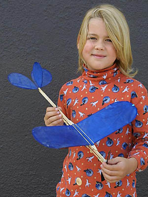

Purl-One PlansI designed and built this model to introduce my then 3 1/2 year-old nephew Duncan to the joys of flying models. Durability was the goal here, with any duration a side benefit. I managed to achieve both. The prototype has been flow extensively and, despite his best efforts, has required only a couple of repairs in the last seven years. The carbon fiber outlines, durable covering, and robust fuselage stick have provided a lasting model that can easly fly for a minute in calm air. Duncan's initial launching technique was to hold the model and prop with two hands, walk out to an appropriate launching position in the gym, then put the model on the floor. As he did this, he would collapse the landing gear enough to stop the prop against the floor, release the prop and then release the model. The gear would rebound, allowing the prop to turn and the model to R.O.G. Such technique depends on a durable model that can bounce back, and fortunately this one can. |
 Maximum durability is the goal with this design, to keep the smiles coming. Minute flights are easy in a typical school gym. |
| In an awesome show of solidarity, the FFML brotherhood came through in spades voting for Annie, a.k.a. #15, on the "You Knit too Much" blog contest. As promised, I have finalized the plan for this model, hereafter known as the "Purl-One" and offer it here. Thank you to all who voted. Photos of Gryffin in his knit wear will appear as soon as I can take the photos and upload them.
Below are links to a series of PDFs. You have your choice of four versions that should make the plan accessible to most everyone out there. Clicking a link will open the plan in a new browser window. Right-, option-, or ctrl-click one of the links below to download the plan of your choice. Some building notes are on the plan. Additional building advice can be found in the Introduction to Building and Flying Free Flight Model Aeroplanes.
Plan A - Single 8.5x11 sheet, enlarge 2x.
| |
copyright © Thayer Syme 2005
All commercial rights reserved